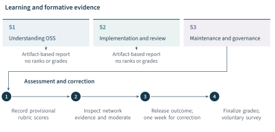
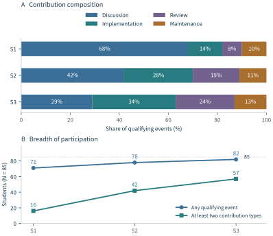
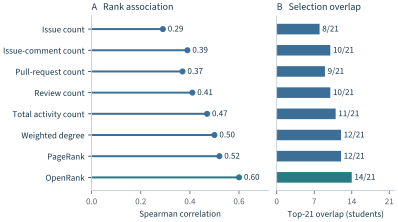
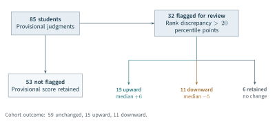
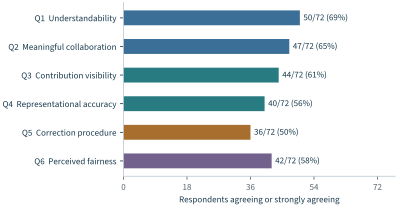
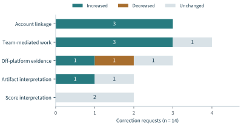
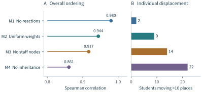

A contribution can matter to a collaboration without producing a conspicuous artifact. A careful review can prevent an error; coordination can bring several unfinished changes together; maintenance can keep other participants’ work usable. Conversely, an account can be highly visible without carrying comparable responsibility. The problem of recognition begins with this mismatch between work, its recorded traces, and the judgments made about it.
Chapters 4–6 established how participation can be measured, how OpenRank represents relationships, and how OpenDigger makes evaluation operational. This chapter examines what happens when such evidence enters a decision about people. Its central case is contribution assessment in open source education, where a bounded population, explicit learning opportunities, and consequential grades make the relation between measurement and judgment unusually clear. The question is how relational evidence can help recognize collaborative work while remaining answerable to the work it claims to represent.
Two course studies provide complementary evidence. The first examined associations between OpenRank and conventional assessment in a Spring 2023 course (Wang et al., 2024). An unpublished experience report describes a Spring 2025 deployment in which instructors recorded provisional judgments, inspected network evidence, moderated scores, and accepted student correction requests (Course study manuscript, n.d.). Both reports describe 85 students. Their stated observation years, assessment procedures, and comparison variables differ; their results are therefore kept separate throughout this chapter. The later report supplies the principal evidence about the recognition process, while the earlier study establishes the measurement comparison from which that process developed.
The contribution to Open Source Evaluatology is a worked account of the transition from measurement to recognition. Part I distinguished work, its effects, and the standards by which it is valued; Part II supplied representations and an operational infrastructure. Here those commitments enter an assessment procedure with identifiable consequences. The course evidence shows where a relational representation directs attention, where it remains incomplete, and how decisions can be revised. Institutional education practice and the enterprise deployment examined in Chapter 6 provide a further question: which parts of that arrangement can transfer, and which require a new justification?
7.1 Contribution and the Purpose of Recognition#
What is being recognized?#
The distinctions developed in Chapter 2 become operational here. An activity is an observed action. A contribution is work interpreted in relation to a collaborative purpose. Influence concerns relationships and effects under a specified account. Recognition is a social or institutional response that acknowledges a contribution, assigns credit, or grants an opportunity. These objects can be related without being interchangeable. A comment count measures recorded participation; a network score summarizes a relational position; a contribution judgment evaluates the substance and responsibility associated with the work.
In a course, recognition has at least two temporal functions. During learning, evidence can help a student understand which work is visible and which opportunities remain. At the end of the course, evidence can inform a formal judgment about demonstrated contribution. A useful formative report need not rank students. A summative decision requires an explanation of how evidence enters the score and who can correct it. The difference concerns intended use, not merely presentation.
This treatment follows the evaluation question of Chapter 3. For the principal deployment, the evaluated arrangement is a network-informed contribution-assessment process. The immediate affected objects are students and their contribution outcomes; the relevant conditions include the course tasks, staff roles, repository boundary, and assessment rules. Provisional instructor judgments provide a comparison for studying how additional evidence changes decisions. They do not provide a counterfactual estimate of what students would have learned without the arrangement. The horizon is one semester, and the purpose is to recognize demonstrated collaborative contribution within a bounded part of the grade.
The distinction also constrains the interpretation of a successful result. Recovering overlooked review work supports the usefulness of the evidence in that decision. It does not establish a student’s complete engineering ability, future employability, or lifetime contribution to an ecosystem. Assessment validity concerns the interpretation and use being proposed (Kane, 2013). Extending a score to a new decision consequently creates a new evidential obligation.
Distributed work and incomplete observation#
Open collaboration provides unusually inspectable records, but the record is still selective. Work can be distributed across issues, changes, reviews, discussions, and maintenance actions. Responsibility can also be distributed within a team while only one account submits the resulting artifact. A final submission compresses that history. A total event count preserves more of the process but assigns little meaning to the difference between a substantive review and a brief acknowledgement.
Research on GitHub in education identified both opportunities and challenges in using a development platform as a collaborative learning environment (Zagalsky et al., 2015). Studies of students contributing to open source projects further show why authentic participation requires attention to the experience of entering an existing community (Pinto et al., 2019). Social barriers identified in newcomer research make low visibility particularly difficult to interpret: it may reflect an obstacle to participation as well as a lack of effort (Steinmacher et al., 2015). These studies motivate observation of the collaboration process; they do not establish that every repository trace is an educationally equivalent unit.
The four contribution constructs in Table 7.1 make this problem concrete. They distinguish the evidence available from the judgment it might support. For example, a review event locates a potentially relevant interaction. Its contribution depends on the problem identified, the reasoning supplied, and its relation to the artifact. Counting the event and assessing its substance remain different operations.
| Construct | Available evidence | Interpretation criterion |
|---|---|---|
| Discussion | Issues, comments, responses | Relevance and substance: clarifying a problem, supporting a decision, or enabling work. |
| Implementation | Pull requests and artifacts | Scope, quality, completion, and response to substantive feedback. |
| Review | Reviews and revision responses | Specificity and influence on consequential problems or artifact improvement. |
| Maintenance | Resolution, integration, follow-up | Responsibility for coordination, integration, and sustained artifact quality. |
The four constructs informed a holistic contribution score; the deployment assigned no fixed numerical subweights to them.
The rubric does not exhaust open source contribution. Documentation, mentoring, testing, release work, and governance can require additional distinctions in another setting. Here the four constructs reproduce the scope of the 2025 course deployment. Their value lies in connecting the measurement to an explicit purpose, rather than presenting one taxonomy as universally complete.
Complementary evidence, rather than a universal score#
Earlier work on team assessment examined Git histories and completed user stories alongside instructor and peer judgments (Buffardi, 2020). A larger replication supported combining these sources, while also showing that the observed relationships depend on the study setting (Hundhausen et al., 2022). Subsequent work added team communication to repository and peer-evaluation evidence (Hundhausen et al., 2023). These contributions establish a useful research direction: different records reveal different parts of collaborative work. The later study extends an existing data lineage, so its findings should not be counted as wholly independent replication of every earlier result.
The OpenRank studies add a relational representation and an account of its use in recognition. They ask what becomes visible when participants and artifacts are considered together, and how that evidence changes an initially recorded judgment. This is narrower than claiming to solve individual assessment. The SPACE framework similarly cautions against reducing developer productivity to activity or to a single dimension (Forsgren et al., 2021). Conceptual learning and artifact quality therefore retain separate assessment responsibilities.
7.2 Designing a Recognition System#
From the evaluation framework to a course procedure#
The five components of Chapter 3 have distinct roles in this application. The problem definition concerns recognition of collaborative contribution. The task instance specifies the enrolled cohort, semester, rubric, and comparison judgments. The algorithm mechanism constructs and scores a collaboration graph. The implementation instance fixes collection, identity matching, monthly computation, and aggregation. The supporting system provides repository records, course records, and access to the artifacts needed for review.
Human moderation and recourse connect these components to consequential use. They are part of the evaluated arrangement, rather than repairs applied outside its specification. Figure 7.1 reconstructs the sequence reported in the 2025 manuscript. The ordering matters: the semester-level network profile was introduced after provisional contribution scores had been recorded. Students received earlier formative reports, so this temporal separation does not imply that instructors or students were unaware of the assessment mechanism throughout the semester.

The three pedagogical stages followed learning objectives. S1 emphasized understanding open source and repository workflows; S2 emphasized implementation, review, and team development; S3 emphasized maintenance, governance, and community analysis. These stages were not defined as March, April, and May. The latter were computational windows. Keeping the two partitions distinct prevents a change in teaching opportunity from being silently treated as a change in a calendar-month metric.
A bounded role in the grade#
The course grade combined regular performance, a midterm assessment, and a final assignment, with weights of 30%, 30%, and 40%. Within regular performance, the reported rule was
Here the three components represent collaborative contribution, task completion, and professional participation. Each was expressed on a 100-point scale. Substitution into the overall rule gives
Thus the entire contribution component could supply at most 12 points to a 100-point course grade. This is a bound on the assessed component, not an automatic 12% allocation to a network algorithm. OpenRank values and percentiles were never converted directly into grade points (Course study manuscript, n.d., Section III).
Instructors first used the same four-construct rubric to record provisional scores. The constructs did not receive fixed numerical subweights. When relational evidence warranted a change, instructors reassessed the substance, responsibility, and context of the work on the same contribution scale. This preserves a distinction between an aggregation rule for the final grade and the professional judgment used to assign a component.
The 12% choice is a design decision from this deployment. It is not an empirically optimized weight or a general prescription for other courses. Its role is intelligible: the assessment could acknowledge overlooked collaboration without allowing repository position to dominate other evidence of learning. A different purpose, such as selecting a maintainer or awarding a fellowship, would need its own account of acceptable dependence on the measure.
The deployed graph and its parameters#
The 2025 manuscript reports monthly heterogeneous graphs containing participants, issues, pull requests, and the course repository. Human accounts were linked to enrolled students through course records. Instructors, teaching assistants, and external participants remained distinct roles in the graph; only the 85 enrolled students entered student-level grading and analysis. The reported dataset contained no bots. Duplicate API records were removed using event identifiers, and artifact identifiers were normalized across event types (Course study manuscript, n.d., Section IV).
An observed event and an algorithm input were not the same set. Issue and non-merged pull-request closures contributed to descriptive maintenance analysis, but received no additional OpenRank interaction weight. Reactions affected artifact initialization without creating edges. Table 7.2 records the five weighted interactions. These values specify the course deployment; they are neither a new estimate of universal contribution value nor a replacement for the configurations in Chapter 5.
| Qualifying interaction | Weight |
|---|---|
| Issue opening | 2.2235 |
| Issue comment | 0.5252 |
| Pull-request opening | 4.0679 |
| Review comment | 0.7427 |
| Pull-request merge | 2.0339 |
Actor–artifact relations were bidirectional before outgoing normalization. Artifact–repository links had unit weight. Closures remained in descriptive activity analysis without an additional propagation weight; reactions modified initial values.
For event type , let count the qualifying interactions between two nodes in month . Aggregated relation weights were
Each actor–artifact relation and each artifact–repository membership relation was represented in both directions with equal pre-normalization weights; membership links had unit weight. Outgoing weights were normalized to produce the column-stochastic transition matrix . With the row of identifying a destination, its entry was .
A newly observed node received base value ; a returning node inherited its most recent converged value. For an artifact, each distinct current-month reaction record added one unit, without distinguishing reaction types. A pull request merged in that month received a further multiplier of 1.5. Writing for the observed issue and pull-request nodes and for merged pull requests, initialization was
The propagation step was
with stopping condition . The converged monthly values were retained without additional rescaling and summed to form semester scores. A participant absent from a snapshot received no updated value and, on returning, inherited the most recent converged value. The manuscript does not separately specify the semester-sum convention for an absent monthly entry; reproducing individual totals requires that implementation detail to be retained with the data.
In the notation of Chapter 5, the normalized propagation operator in this deployment is , the propagation coefficient is 0.85, and supplies both the numerical starting point and the fixed term in the iteration. Keeping these two roles explicit connects the application to the general formulation without substituting a later configuration for the deployed one. This is a scalar application of the broader OpenRank family discussed in Chapter 5 (Han et al., 2026a). Its parameter meanings belong to the application. Temporal inheritance preserves prior network value; it does not itself prove that a student’s ability has persisted. Reactions affect initial values; they do not provide an independent quality assessment. A merge receives additional weight and an initialization multiplier because the deployed configuration treats integration as consequential. The sensitivity analysis in Section 7.6 examines how several such choices affect rankings.
Disagreement as a reason to inspect#
OpenRank and provisional contribution scores were converted to within-cohort percentiles for comparison. The operational review rule was
The strict inequality reproduces the manuscript. Twenty percentile points corresponded approximately to 17 positions in the 85-student cohort. The threshold was selected before inspecting the semester-level comparison and served to prioritize review; it was not optimized against later outcomes. A discrepancy did not determine either the direction or magnitude of an adjustment.
Two instructors independently considered the additional evidence, proposed rubric-based judgments, and resolved differences through discussion. Students could subsequently request correction even if their case had not crossed the threshold. This matters because agreement can conceal shared omissions, while a small rank displacement can accompany a consequential attribution error. The decision procedure therefore gave the threshold a limited administrative role.
7.3 Evidence from Two Educational Deployments#
Two studies with different evidential roles#
Table 7.3 separates the evidence used in this chapter. The published course study describes Spring 2023 and compares OpenRank with regular-performance, midterm, final-assignment, and overall grades. The unpublished report describes Spring 2025 and adds a formally specified moderation process, correction outcomes, a post-course survey, and configuration comparisons. A shared cohort size does not make their observations interchangeable.
| Dimension | Earlier course study | Later experience report |
|---|---|---|
| Reported deployment | Spring 2023; 85 students | Spring 2025; 85 students |
| Publication status | Published in 2024 | Supplied unpublished manuscript |
| Primary comparison | OpenRank against regular-performance, midterm, final, and overall grades | Repository measures against pre-OpenRank provisional contribution judgments |
| Additional evidence | Monthly collaboration and assessment associations | Stages, moderation, correction requests, survey, and configuration sensitivity |
| Role in this chapter | Historical measurement correspondence | Main account of consequential recognition and revision |
| Inference boundary | No independent guarantee of learning or fairness | No untreated comparison or established learning effect |
The shared sample size does not justify merging participants, months, grades, or correlation coefficients. The chapter does not estimate a cross-cohort treatment effect.
The resulting evidence sequence is developmental rather than a pooled experiment. The 2023 study asks whether a relational representation corresponds to established assessments. The 2025 report asks what happens when relational evidence is introduced into an inspectable decision process. Together they motivate a progression in evaluation design, but they do not establish a measured improvement between cohorts. That would require comparable protocols, outcomes, and a justified cross-cohort comparison.
Learning opportunities change the meaning of activity#
The 2025 deployment reported a marked shift in the composition of repository-visible work. Discussion accounted for 68% of qualifying events in S1, 42% in S2, and 29% in S3. Implementation rose from 14% to 28% and 34%; review rose from 8% to 19% and 24%; maintenance accounted for 10%, 11%, and 13%. Figure 7.2 preserves these reported shares and separates them from student coverage.

The number of students with at least one qualifying event rose from 71 to 78 and then 82. Those contributing through at least two types rose from 16 to 42 and then 57. Sixty-four students were active in all three stages. Thus broader participation and a broader repertoire accompanied the changing event composition. The same source reports that 31 of the 55 students who had only one contribution type in S1 added another in S2. After review opportunities became more explicit, 18 of 24 students without an earlier review performed at least one in S3.
These changes are consequential for interpretation. Absence of a review in a stage with few review opportunities differs from absence after review has become an expected practice. The observed record contains both student action and the opportunity structure created by teaching. Chapter 4’s distinction between a recorded behavior and the phenomenon of interest therefore applies within a single cohort, not only across platforms or communities.
The observations do not isolate the effect of formative reporting. Course tasks changed during the same period, and students accumulated experience. The study did not randomly assign the reports or supply an untreated comparison. Stage-level differences support contextual interpretation of the record; they do not establish that the evaluation mechanism caused the expanded participation.
Concentration persists beneath broader coverage#
Participation remained unequal. The most active 20% of students generated 57.9% of qualifying events, while nine students produced fewer than five events over the observation period. Table 7.4 records the reported distribution summaries. The event-count Gini coefficient was 0.51; the OpenRank-score coefficient was 0.43.
| Measure | Reported value |
|---|---|
| Top 10% share of qualifying events | 36.8% |
| Top 20% share of qualifying events | 57.9% |
| Gini coefficient of event counts | 0.51 |
| Gini coefficient of OpenRank scores | 0.43 |
| Students with fewer than five qualifying events | 9 (10.6%) |
| Students active in all three stages | 64 (75.3%) |
. The source rounds percentile groups to whole students. Event shares and score inequality describe different quantities; neither is an independent measure of fairness.
The two Gini values summarize different quantities. Their difference indicates a less concentrated distribution of the reported relational scores than of event counts in this deployment. It does not show that contribution became more equal, that the scores became fairer, or that students changed their behavior because the measure was used. Such conclusions would require evidence about work and consequences, not only the shape of a score distribution.
A low score accordingly calls for a question before it supports a judgment. Did the student have relevant opportunities? Was work submitted through a teammate? Were account identities correctly linked? Did a small number of actions carry substantial responsibility? These are not reasons to dismiss low recorded participation. They identify the evidence required to interpret it. Repository-mining research supplies the broader warning that platform records and the underlying development process can diverge (Kalliamvakou et al., 2014).
The converse applies to highly visible students. Repeated brief interactions, shared course tasks, and exchanges with instructional staff can produce prominence. A relational model makes the pattern inspectable, but it does not assign educational substance to every path. The moderation evidence below examines both kinds of mismatch.
7.4 Relational Evidence and Contextual Judgment#
What the earlier correlations establish#
In the 2023 study, OpenRank had a Pearson correlation of 0.54 and a Spearman correlation of 0.60 with regular-performance assessment. Associations with midterm and final assignments were smaller; the overall-grade correlations were 0.53 and 0.58. Table 7.5 retains all coefficients and reported significance values.
| Assessment | Pearson | Spearman | ||
|---|---|---|---|---|
| Regular performance | 0.54 | 0.60 | ||
| Midterm assignment | 0.25 | 0.28 | ||
| Final assignment | 0.31 | 0.33 | ||
| Overall grade | 0.53 | 0.58 |
The midterm Pearson result is , not . These historical results are not the pre-OpenRank contribution-score comparisons in the 2025 report.
The pattern is consistent with the intended proximity of repository contribution to regular performance. A midterm or final assignment examines other aspects of learning, so lower association need not indicate a defective contribution measure. Equally, agreement with regular performance is not sufficient to validate every interpretation of contribution. The measures may partly observe the same work and may share omissions. The supplied study does not establish the same pre-OpenRank recording sequence used in the 2025 report.
The midterm Pearson value is . It is below 0.05 but not below 0.01; the source’s general statement that all comparisons satisfy the latter threshold is therefore too strong. We preserve the reported value and narrow the interpretation. No participant-level values, confidence intervals, or new significance tests have been reconstructed from these aggregates.
The useful conclusion is correspondence under a specific course design, with differences across assessment purposes. Validity research treats the content represented, the structure of a measure, its external relationships, and the consequences of use as related evidential questions (Messick, 1994). A correlation answers only part of that argument. The 2025 deployment adds evidence about how a score changes the inspection and recognition of work.
Comparison with a temporally prior judgment#
The later report compares eight repository measures with contribution scores recorded before instructors inspected the semester-level OpenRank profile. These include event counts, weighted degree, PageRank, and OpenRank. All network baselines used the monthly graphs, with monthly student values aggregated over the semester; PageRank used damping factor 0.85. Figure 7.3 presents the reported rank correlations and top-21 overlaps.

OpenRank had the largest reported correlation, , and shared 14 of the 21 highest-ranked students with the provisional ordering. Total activity count had and an overlap of 11; PageRank had and an overlap of 12. These comparisons establish the reported ordering of descriptive agreement in this cohort. Without a test of the dependent correlations, they do not establish statistically significant superiority over each baseline.
The comparison target also needs its proper status. Provisional judgments were temporally prior to the specific profile inspection, but were based partly on the same underlying artifacts and repository records. They were not an error-free ground truth or an information-independent criterion. Final moderated scores would be still less appropriate as an independent validation target because OpenRank-informed inspection helped produce them.
For recognition, disagreement is therefore as informative as association. If the provisional assessment overlooks distributed review, a useful additional measure can disagree with it. If a network rank is elevated by brief responses, its discrepancy may instead reveal a representational limitation. Neither direction can be settled by treating the higher-ranked measure as authoritative. The relevant evidence is in the work.
What contextual review changed#
The pre-specified rule flagged 32 students. Six retained their provisional score after inspection, while 26 received adjustments: 15 upward and 11 downward. Across the full cohort, 59 scores remained unchanged. Figure 7.4 distinguishes the flagged subset from the full cohort and preserves the two adjustment directions.

The median upward change was six points and the median downward change was five points on the 100-point contribution component. The reported median absolute effect on the final course grade among the 26 adjusted cases was 0.7 points, and the largest was 1.8 points. These are different scales. Equation 7.2 explains why a meaningful change to the contribution judgment could have a limited effect on the overall grade.
Table 7.6 reports the reasons assigned to those adjustments. Upward revisions recognized substantive review, coordination across several threads, and distributed maintenance. Downward revisions concerned repeated brief responses, prominence around shared instructional artifacts, and staff-centered interactions. These are the study’s reported categories, not new qualitative codes assigned for this book.
| Direction | Reported contribution pattern | What inspection resolved | |
|---|---|---|---|
| Upward | Substantive review | 6 | Review responsibility weakly visible in artifact production |
| Upward | Coordination across threads | 5 | Work connecting participants and tasks |
| Upward | Distributed maintenance | 4 | Responsibility dispersed across artifacts |
| Downward | Repeated brief responses | 5 | Visibility exceeded the demonstrated substance |
| Downward | Shared instructional artifacts | 4 | Prominence partly reflected common task structure |
| Downward | Staff-centred exchanges | 2 | Role-dependent visibility required contextual interpretation |
Upward , median change ; downward , median change , on the 100-point contribution component. Counts preserve the source categories; explanatory wording is adapted for the book.
The upward cases give substance to the relational argument. Work that connects participants and advances artifacts can be dispersed across the repository and weakly represented in an assignment-oriented view. The network profile can direct an instructor toward those relations. The supporting reviews and interaction histories, rather than rank alone, then justify recognition.
The downward cases are equally important. Legitimate participation is not necessarily substantive contribution at the level suggested by structural prominence. A shared task artifact can connect much of a class; staff interactions can create pathways unavailable in a peer-only graph. Research on developer centrality likewise interprets embeddedness within a particular communication setting (Maruping et al., 2019). In the course, the rubric and artifact inspection supplied the further judgment about educational meaning.
Reviewing the 32 flagged cases required a reported 126 minutes, with a median of 3.5 minutes per case. This documents operational effort, not a measured time saving: the report supplies no matched timing for an alternative review process. The instructors agreed on whether adjustment was warranted in 27 of the 32 cases before discussion. Their remaining disagreements concerned the substance of central interactions and responsibility distributed across artifacts. The counts show why human review should itself be documented, rather than treated as an infallible final layer.
7.5 Feedback, Recourse, and Participation#
Making evidence useful before the final decision#
The 2025 process released formative reports after S1 and S2. These identified recorded contribution types and supporting artifacts without cohort ranks or grades. Their purpose was to make the current evidence interpretable while students still had opportunities to act. After S3, the procedure moved to provisional scoring, network-informed moderation, release of the outcome, and a one-week correction period. The post-course survey followed finalization of grades and was voluntary.
This separation gives feedback a concrete function. A student can inspect which work was recorded, understand the contribution criteria, and consider a further opportunity. Sadler’s account of formative assessment connects improvement to understanding standards, comparing current work with them, and having means to reduce the gap (Sadler, 1989). Nicol and Macfarlane-Dick emphasize students’ active role in interpreting and generating feedback (Nicol and Macfarlane-Dick, 2006). A rank alone supplies neither the relevant standard nor the means to improve.
The wider assessment literature supports studying feedback as a process rather than assuming that reporting a number improves learning (Black and Wiliam, 1998). Feedback interventions can have heterogeneous, including adverse, consequences (Kluger and DeNisi, 1996). In this course, those findings motivate the design and the questions to investigate; they do not substitute for direct evidence that the reports produced a learning gain.
Understanding, representation, and perceived fairness#
Seventy-two of the 85 students completed the post-course survey, an 84.7% response rate. The six items addressed understandability, encouragement of meaningful collaboration, visibility, representational accuracy, procedural clarity, and perceived fairness. Figure 7.5 redraws only the reported agreement counts. It does not reconstruct the unavailable individual responses or the full five-category distributions.

Fifty respondents reported understanding which activities entered assessment, but only 40 considered the report an accurate representation of their contribution. Thirty-six understood how to request correction. The distinction is substantive: knowing the input rules is different from judging the evidence complete, and both differ from knowing how to challenge an outcome. Forty-two respondents considered the overall process fair. This is evidence about perceived fairness among respondents, not a demonstration of equal opportunity or absence of disparate effects.
The response counts also limit what can be inferred. Thirteen students did not participate in the survey, and their views need not match those who did. Agreement with an item about meaningful collaboration records a perception; it is not an observed behavioral effect. The open-ended responses described team-mediated work, local development, and brief visible interactions whose substance was difficult to represent. These themes identify practical mismatches, without establishing their population prevalence beyond the reported evidence.
The low procedural-clarity result deserves particular attention. A correction mechanism can exist while many participants remain uncertain how to use it. Improving that part of the arrangement requires clearer communication and an examination of access to review. It does not require interpreting dissatisfaction as proof that the algorithm failed, nor treating an available appeal as sufficient evidence of a fair process.
Recourse changes the evidence available to the evaluator#
Fourteen students submitted correction requests after instructor moderation. Nine requests produced a revised contribution score: eight increased and one decreased; five remained unchanged. The requests concerned account linkage, team-mediated work, off-platform evidence, artifact interpretation, and score interpretation. Figure 7.6 preserves the category and outcome counts.

All three account-linkage requests produced upward corrections. Three of four requests concerning team-mediated work also increased the score. Of the three off-platform cases, one increased, one decreased after duplicated evidence was identified, and one remained unchanged. One of two artifact-interpretation requests increased the score; neither score-interpretation request changed it. Across the nine revised cases, the median absolute change was four points on the contribution component and the largest was seven.
The nine corrections followed the 26 changes at the moderation stage. The manuscript does not identify the overlap between those sets of students, so their counts cannot be added to report 35 distinct beneficiaries or corrected individuals. It also does not report a cumulative final-grade change across both stages for each student. Preserving the sequence and denominators prevents an apparently simple total from overstating what is known.
Recourse has an epistemic role here. A student can supply attribution or context that is absent from the graph, changing the evidence on which the evaluator acts. Recomputing the same graph would not recover all team-mediated or off-platform responsibility. Conversely, a request does not establish the claimed contribution: duplicated records and unsupported interpretations can leave the score unchanged or reduce it. The study therefore treats correction as evidence-based reconsideration rather than an automatic upward adjustment.
From a course to a continuing contribution record#
The team’s institutional education account describes an arrangement connecting standards, courses, projects, competitions, and evaluation, with OpenDigger, OpenRank, and OpenTalent supporting contribution visibility (X-lab, n.d.). It also describes student participation in mentoring programmes and community projects. This material provides a practice setting for transferring the chapter’s reasoning; it is an institutional account, not an independently controlled evaluation of educational outcomes.
The transferable object is an inspectable contribution record: what work was observed, how responsibility was attributed, which model summarized it, and what judgment followed. A portfolio can retain the artifacts, roles, periods, and contextual explanation alongside a score. Different users can then ask different questions of the evidence. A teacher may ask about a demonstrated course responsibility; a community may ask about sustained review and maintenance; a selection committee may need evidence of capabilities that the repository never observed.
Table 7.7 distinguishes these uses. Its transfer requirements are this book’s design synthesis, not a claim that every named platform already implements the same procedure. In particular, the one-week correction window and 12% weighting belong to the 2025 course. They cannot be attributed to OpenTalent generally, to external mentoring programmes, or to enterprise recognition without separate records.
| Setting | Evidence that can be carried forward | Decision that still needs justification |
|---|---|---|
| Course assessment | Dated artifacts, roles, rubric judgments, corrections | Contribution component, grading influence, and opportunity to demonstrate learning |
| OpenTalent / institutional portfolio | Traceable contribution records and contextual explanations | Criteria for each recognition or selection use; access to review |
| Mentored community projects | Work completed, review exchanges, maintenance responsibility | Community-specific expectations and evidence of continuing participation |
| Enterprise recognition | Repository histories and relational contribution profiles | Public visibility, incentives, organizational context, and consequences |
The right column states requirements for transfer; it does not assert that all practices already implement them. Sources: Wang et al. (2024); Course study manuscript (n.d.); Zhao et al. (2024); X-lab (n.d.).
The enterprise OpenRank Leaderboard examined in Chapters 5–6 supplies a useful contrast (Zhao et al., 2024). It makes contribution recognition part of a public community arrangement and investigates participation around deployment. The course mechanism uses private formative reports and rubric-based decisions within formal assessment. Both connect measurement to recognition, but their audiences, stakes, opportunities, and feedback paths differ. Reusing the underlying method does not make their intervention effects interchangeable.
This distinction also guards against a common narrative shortcut. A platform’s adoption, an institutional award, or a student’s later achievement can establish that a practice exists or that a person succeeded. Those facts do not isolate the effect of the evaluation method. The relevant next evidence would connect a particular decision, its supporting record, the participant’s response, and an outcome appropriate to the intended use.
7.6 Validity and Consequences of Recognition#
Stable aggregates can conceal unstable individual positions#
The 2025 manuscript compares the deployed ordering with four alternative specifications. These remove reaction-based initialization, replace typed weights with uniform weights, exclude instructional actors, or disable monthly inheritance. Figure 7.7 presents both overall rank correlation and the number of students displaced by more than ten positions.

Removing reactions produced , with two students moving by more than ten places. Uniform weights produced , with nine such displacements. Removing instructors and teaching assistants produced , with 14 students affected; disabling inheritance produced , with 22. These are comparisons with the deployed model, not with an external ground truth. The most stable alternative is not automatically the most valid, and an alternative’s disagreement does not by itself discredit it.
The configurations express different accounts of collaboration. Removing staff changes paths created by task initiation, feedback, and coordination. Disabling inheritance changes how earlier participation enters later computation. Uniform weights reduce distinctions among event types. Each is therefore a substantive modification to the measurement, not merely a numerical perturbation. The observed displacements make those commitments relevant at the level of the individual decision.
A release protocol should consequently record the graph schema, event rules, role treatment, temporal inheritance, solver, aggregation, and comparison population. If a later version changes materially affected positions, the corresponding decisions need review under the declared purpose. This is the practical extension of the version discipline in Chapters 4–6. A score without its configuration and period is insufficient evidence for durable recognition.
The procedure is itself an object of evaluation#
The chapter’s evidence supports several distinct claims. The earlier correlations establish correspondence with specified assessments. The later baseline comparison establishes descriptive alignment with prior judgments. Moderation and recourse document changes to decisions and the reported reasons for them. The survey records participants’ perceptions. Sensitivity analysis shows dependence on selected model choices. None of these alone establishes the arrangement’s effect on learning, equality of opportunity, or long-term community participation.
The strongest limitation is the scope of the deployment: one semester, one public repository, and 85 students under a particular instructional design. The reports do not supply a randomized comparison, an independent measure of all relevant contribution, or a longitudinal outcome study. Staff judgment can retain bias even after discussion. Students with stronger knowledge of the procedure may be better able to present a correction request. The existence of recourse addresses some omissions while creating further questions about its accessibility and consistency.
The measures can also alter the process being observed. Participants may make useful work more visible, but they may also favor easily recorded actions. Research on rankings and reactivity shows why public measures can shape expectations and behavior (Espeland and Sauder, 2007). That mechanism is a reason to study consequences in open source recognition, not evidence that any particular distortion occurred in this cohort. The documented distinction between brief visible interactions and substantive work nevertheless shows why the possibility belongs in the evaluation design.
An appropriate comparison would assess the arrangement as a whole: record quality, instructor effort, decision consistency, participant access to correction, and subsequent opportunities for contribution. Evaluating only the solver’s reproducibility would leave the most consequential part of the system unexamined. Equally, a favorable participant survey would not resolve attribution errors or configuration dependence.
What practice adds to the framework#
Table 7.8 brings the findings back to the concepts of Parts I and II. These refinements do not introduce a new set of axioms. They state what a recognition application requires the existing framework to make explicit.
| Framework concern | Evidence in this chapter | Consequence for evaluation design |
|---|---|---|
| Object and purpose | Contribution is one bounded part of course assessment | State the decision the measure may inform; retain other learning evidence. |
| Conditions and observation | Stage-dependent opportunities; account and team-mediated corrections | Record opportunity, role, and attribution alongside event definitions. |
| Measurement and interpretation | Both upward and downward moderation | Preserve artifact access and a standard for judging substantive work. |
| Implementation and versions | Rank displacement under role and temporal changes | Freeze configurations and inspect affected individual decisions. |
| Use and revision | Nine later corrections; limited procedural clarity | Treat accessible recourse and recorded rationales as parts of the procedure. |
The chapter supports these refinements within the studied settings. General effects on learning, fairness, and long-term participation remain questions for further evaluation.
Observability depends on opportunity and recording arrangements. The course stages and correction requests show why a fixed rule can capture different parts of contribution at different times. A data-source description therefore needs an account of which work could occur and how it could become visible.
Relational prominence guides attention; the rubric and artifact review supply the recognition standard. Both upward and downward moderation support this division of responsibility. Their combination is the evaluated mechanism, with a validity argument that must cover the connection between representation and judgment.
Correction can change what the evaluator knows. Account linkage, distributed responsibility, and artifact interpretation affect the evidence itself. Recording whether a revision concerned observation, attribution, modeling, or use makes individual reconsideration informative for later versions of the system.
The intended consequence also sets the level of scrutiny. A profile used to alter a formal grade requires evidence about individual instability and access to correction. The bounded grading role makes that commitment concrete without resolving the remaining questions about learning or equality of opportunity.
Chapter 8 takes up the maintenance and coordination work whose visibility mattered here and asks whether the capability it supports can continue. Recognition acknowledges a contribution; sustainability concerns the responsibilities and transitions through which a function remains available. The archived-project study supplies evidence for that further inquiry.
References#
Black, P., and Wiliam, D. (1998). Assessment and classroom learning. Assessment in Education: Principles, Policy & Practice, 5(1), 7–74. DOI: 10.1080/0969595980050102.
Buffardi, K. (2020). Assessing individual contributions to software engineering projects with Git logs and user stories. In Proceedings of the 51st ACM Technical Symposium on Computer Science Education, pp. 650–656. DOI: 10.1145/3328778.3366948.
Course study manuscript (n.d.). Assessing Student Contributions with Network-Based Evidence in an Open Source Software Engineering Course. Unpublished anonymous manuscript, 11 pp. Author-supplied version received 1 November 2026; reports a Spring 2025 deployment.
Espeland, W. N., and Sauder, M. (2007). Rankings and reactivity: How public measures recreate social worlds. American Journal of Sociology, 113(1), 1–40. DOI: 10.1086/517897.
Forsgren, N., Storey, M.-A., Maddila, C., Zimmermann, T., Houck, B., and Butler, J. (2021). The SPACE of developer productivity: There’s more to it than you think. ACM Queue, 19(1), 20–48. DOI: 10.1145/3454122.3454124.
Han, F., Zhao, S., Wang, W., Peng, J., and Xia, X. (2026a). OpenRank: A centrality algorithm for high-dimensional heterogeneous networks in open source collaboration. Information Sciences, 730, 122893. DOI: 10.1016/j.ins.2025.122893.
Hundhausen, C. D., Conrad, P. T., Carter, A. S., and Adesope, O. (2022). Assessing individual contributions to software engineering projects: A replication study. Computer Science Education, 32(3), 335–354. DOI: 10.1080/08993408.2022.2071543.
Hundhausen, C., Conrad, P., Adesope, O., and Tariq, A. (2023). Combining GitHub, chat, and peer evaluation data to assess individual contributions to team software development projects. ACM Transactions on Computing Education, 23(3), Article 33, 23 pp. DOI: 10.1145/3593592.
Kalliamvakou, E., Gousios, G., Blincoe, K., Singer, L., German, D. M., and Damian, D. (2014). The promises and perils of mining GitHub. In Proceedings of the 11th Working Conference on Mining Software Repositories, pp. 92–101. DOI: 10.1145/2597073.2597074.
Kane, M. T. (2013). Validating the interpretations and uses of test scores. Journal of Educational Measurement, 50(1), 1–73. DOI: 10.1111/jedm.12000.
Kluger, A. N., and DeNisi, A. (1996). The effects of feedback interventions on performance: A historical review, a meta-analysis, and a preliminary feedback intervention theory. Psychological Bulletin, 119(2), 254–284. DOI: 10.1037/0033-2909.119.2.254.
Maruping, L. M., Daniel, S. L., and Cataldo, M. (2019). Developer centrality and the impact of value congruence and incongruence on commitment and code contribution activity in open source software communities. MIS Quarterly, 43(3), 951–976. https://aisel.aisnet.org/misq/vol43/iss3/14/.
Messick, S. (1994). Validity of psychological assessment: Validation of inferences from persons’ responses and performances as scientific inquiry into score meaning. ETS Research Report Series, 1994(2), i–28. DOI: 10.1002/j.2333-8504.1994.tb01618.x.
Nicol, D. J., and Macfarlane-Dick, D. (2006). Formative assessment and self-regulated learning: A model and seven principles of good feedback practice. Studies in Higher Education, 31(2), 199–218. DOI: 10.1080/03075070600572090.
Pinto, G., Ferreira, C., Souza, C., Steinmacher, I., and Meirelles, P. (2019). Training software engineers using open-source software: The students’ perspective. In Proceedings of the IEEE/ACM 41st International Conference on Software Engineering: Software Engineering Education and Training, pp. 147–157. https://www.igor.pro.br/publica/papers/ICSE_SEET2019.pdf.
Sadler, D. R. (1989). Formative assessment and the design of instructional systems. Instructional Science, 18, 119–144. DOI: 10.1007/BF00117714.
Steinmacher, I., Conte, T. U., Gerosa, M. A., and Redmiles, D. F. (2015). Social barriers faced by newcomers placing their first contribution in open source software projects. In Proceedings of the 18th ACM Conference on Computer Supported Cooperative Work & Social Computing, pp. 1379–1392. DOI: 10.1145/2675133.2675215.
Wang, J., Huang, W., Zhao, S., Xia, X., Han, F., Wang, W., and Zhang, Y. (2024). OpenRank contribution evaluation method and empirical study in open-source course. Journal of East China Normal University (Natural Science), 2024(5), 11–19. In Chinese. DOI: 10.3969/j.issn.1000-5641.2024.05.002.
X-lab (n.d.). Making Contributions Visible and Providing Pathways for Growth: East China Normal University’s Integrated Open Source Development Platform. Author-supplied institutional practice account, in Chinese, received 1 November 2026. English title translated for this book; not an independently evaluated outcome study.
Zagalsky, A., Feliciano, J., Storey, M.-A., Zhao, Y., and Wang, W. (2015). The emergence of GitHub as a collaborative platform for education. In Proceedings of the 18th ACM Conference on Computer Supported Cooperative Work & Social Computing, pp. 1906–1917. https://alexeyza.com/pdf/cscw15.pdf.
Zhao, S., Xia, X., Fitzgerald, B., Li, X., Lenarduzzi, V., Taibi, D., Wang, R., Wang, W., and Tian, C. (2024). OpenRank Leaderboard: Motivating open source collaborations through social network evaluation in Alibaba. In Proceedings of the 46th International Conference on Software Engineering: Software Engineering in Practice, pp. 346–357. DOI: 10.1145/3639477.3639734.